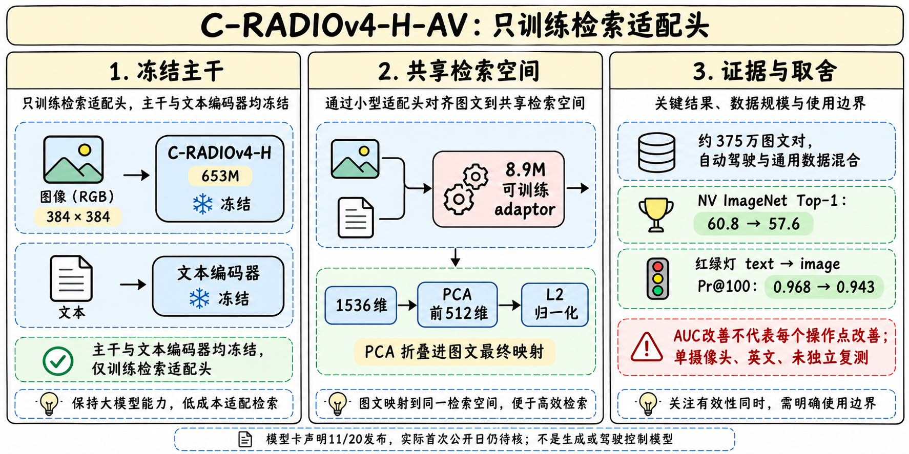

检索结构与推理路径

C-RADIOv4-H基座653M，只有SigLIP2-g adaptor head的8.9M参与训练。图像RGB直接resize384×384、不保持宽高比。图文adaptor先输出1536维，共用PCA，取前512分量；官方示例将PCA折叠进图文最终head的权重/偏置，再L2归一化，用cosine或dot排序。不能将8.9M当完整模型总参数。
PCA超过约500分量特征值接近零、压缩损失很小是卡的经验结论；实际分布改变时仍要检验。torch.hub代码、checkpoint与PCA矩阵需要固定同版；本轮仅静态读取卡，不执行示例。
训练数据、选择与泄漏边界
3,747,347图文对、3,369,193独立图片。其中AV1,850,979对，caption由KimiK3和模板构造；NVClip1,896,368对。约274GB私有训练数据，没有开放完整样本/清洗审计。单120°camera、英文限制保留。
val131,604对（AV116,221、NVClip15,383）用于选epoch。训练/验证/评测按类别无H3cell重叠；不能推导跨类别或所有相邻地理信息完全隔离。优化器、训练步数和超参未完整披露，8.9M轻量并不排除过拟合。
全部结果与退化操作点
AVObjects gallery73,961张（intersection5,466、markings10,162、lights7,209、signs51,124），843查询图片、93文本查询。NVImageNet为1000类、每类最多100张。没有独立重复种子或置信区间。
| Model | Top-1 (%) | Top-5 (%) |
|---|---|---|
| C-RADIOv4-H (base, no fine-tuning) | 60.8 | 84.5 |
| C-RADIOv4-H-AV | 57.6 | 82.2 |
| Dataset | Model | Pr@100 | Recall@100 | AUROC | PR_AUC |
|---|---|---|---|---|---|
| Intersection | C-RADIOv4-H (base) | 0.875 | 0.081 | 0.790 | 0.619 |
| C-RADIOv4-H-AV | 0.902 | 0.083 | 0.880 | 0.736 | |
| Road Markings | C-RADIOv4-H (base) | 0.437 | 0.035 | 0.584 | 0.236 |
| C-RADIOv4-H-AV | 0.696 | 0.055 | 0.774 | 0.480 | |
| Traffic Light | C-RADIOv4-H (base) | 0.632 | 0.036 | 0.594 | 0.356 |
| C-RADIOv4-H-AV | 0.951 | 0.057 | 0.840 | 0.703 | |
| Traffic Sign | C-RADIOv4-H (base) | 0.574 | 0.119 | 0.855 | 0.304 |
| C-RADIOv4-H-AV | 0.762 | 0.169 | 0.973 | 0.623 |
| Dataset | Model | Pr@100 | Recall@100 | AUROC | PR_AUC |
|---|---|---|---|---|---|
| Intersection | C-RADIOv4-H (base) | 0.926 | 0.086 | 0.881 | 0.749 |
| C-RADIOv4-H-AV | 0.944 | 0.087 | 0.937 | 0.834 | |
| Road Markings | C-RADIOv4-H (base) | 0.469 | 0.036 | 0.603 | 0.274 |
| C-RADIOv4-H-AV | 0.577 | 0.046 | 0.772 | 0.464 | |
| Traffic Light | C-RADIOv4-H (base) | 0.968 | 0.058 | 0.842 | 0.702 |
| C-RADIOv4-H-AV | 0.943 | 0.056 | 0.875 | 0.726 | |
| Traffic Sign | C-RADIOv4-H (base) | 0.650 | 0.145 | 0.913 | 0.433 |
| C-RADIOv4-H-AV | 0.762 | 0.175 | 0.977 | 0.624 |
通用Top1从60.8→57.6、Top5从84.5→82.2。TrafficLight text→image的AUC .842→.875、PRAUC .702→.726，而Pr@100 .968→.943、Recall .058→.056；全局曲线指标更好不代表业务操作点更好。应按目标召回/误报/标注预算选阈值，不能只摘最佳指标。
研究启发与限制
适合测试Agent数据检索、场景挖掘与难例筛选，不能把检索相似度当安全驾驶或ground-truth verifier。建议固定主干，分别控制AV/NVClip比例、合成caption来源、PCA与embedding归一化；分地理/天气/相机/语言报告召回，给通用能力回归和置信区间。当前无开放训练账本及独立复测。
许可为NVIDIA Open Model License，官方PDF条款仅保留链接，本轮未抓取；实际部署前仍需按使用场景读取条款，不能由“商业可用”一句替代全部条件。